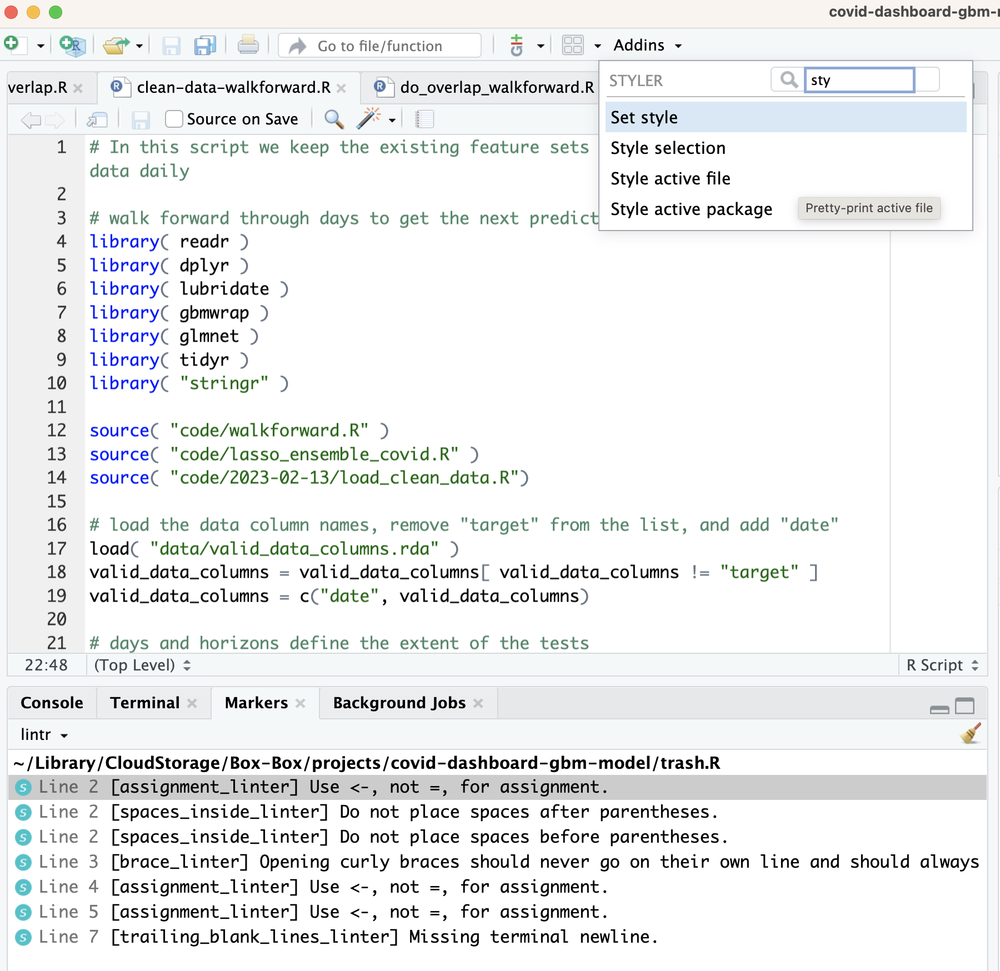

#
items = c( "apple", "pear", "candy" )
sapply( items, nchar )
# lapply( items, nchar )
totalChars = 0
for (i in 1:length(items)) { totalChars = totalchars + nchar(items[[i]]); print(nchar(items[[i]]))}Clean up lint with styler
While lintr identifies code lint, styler automatically cleans it up. Like lintr, styler integrates with RStudio so the best way to style a script is to select “Style active file” from the “Addins” menu.

styler integrationExamples
Now lets look at how styler handles our crappy R script from the lintr example.
becomes
#
items <- c("apple", "pear", "candy")
sapply(items, nchar)
# lapply( items, nchar )
totalChars <- 0
for (i in 1:length(items)) {
totalChars <- totalchars + nchar(items[[i]])
print(nchar(items[[i]]))
}you can see that styler has not fixed all of the code lint: the lapply() call is still commented out, 1:length(items) has not been changed to seq_along(items), and object names weren’t changed. You can change default settings but for starters I recommend running lintr again after styler to see what lint remains.
Conclusion
Like lintr, styler can’t make your code work. It can, however, make it more readable and therefore maintainable. The extremely convenient RStudio integrations mean that there’s really no reason to not use these packages.